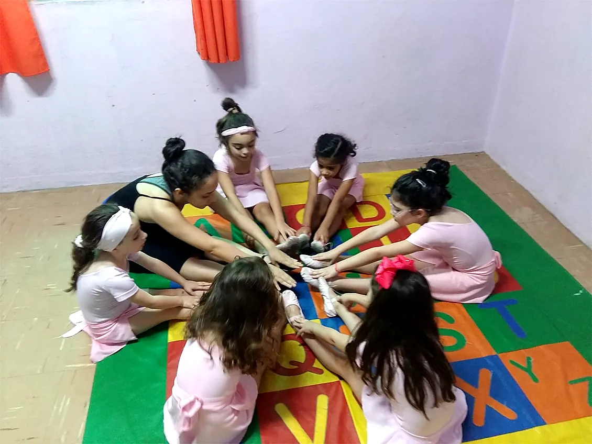
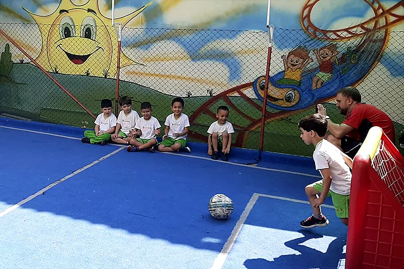
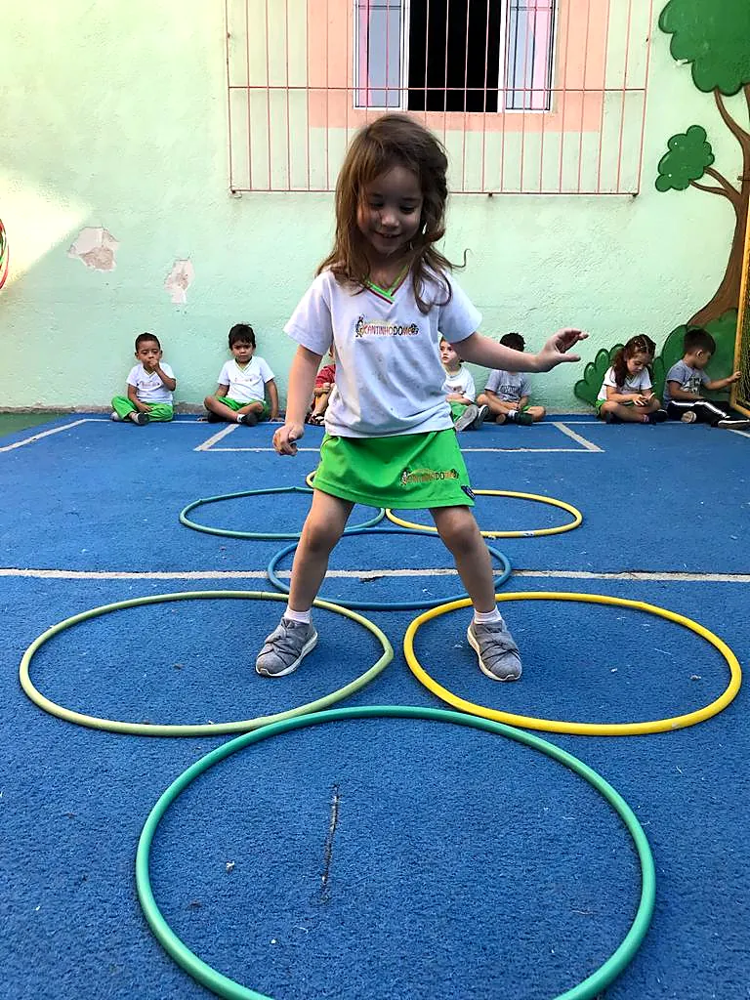
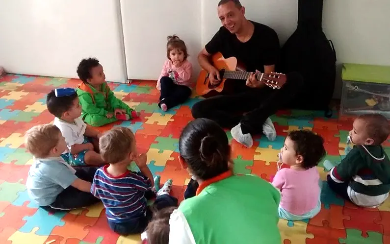
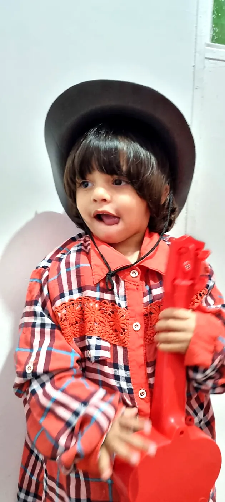
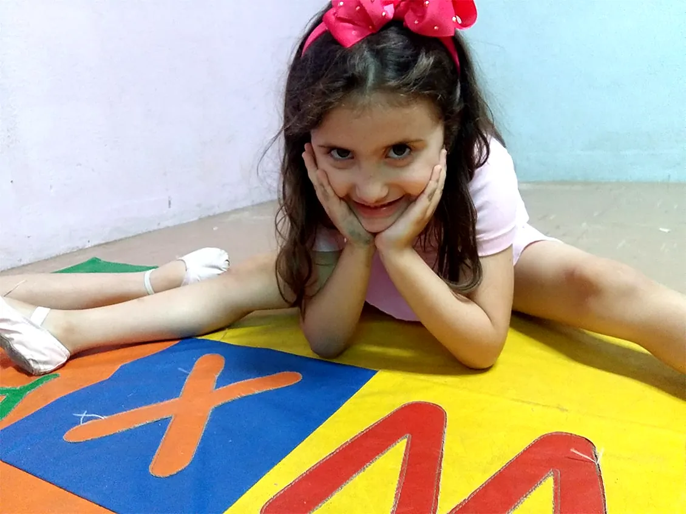
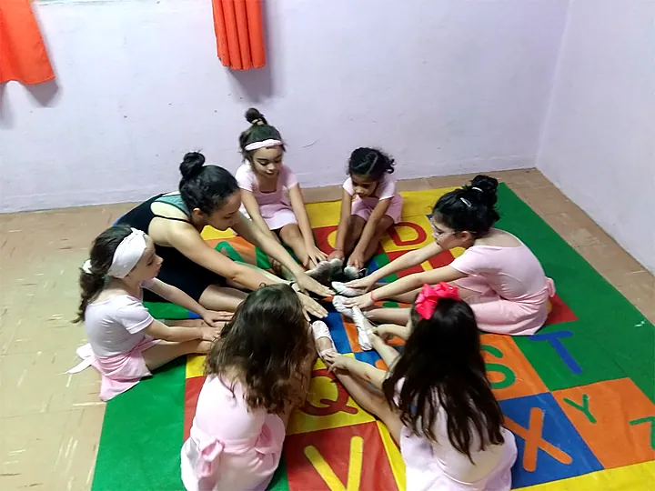
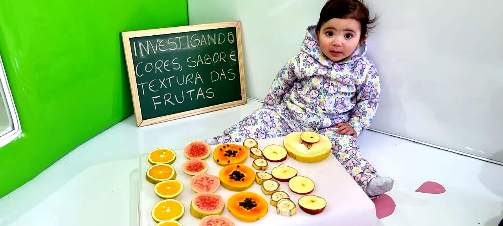
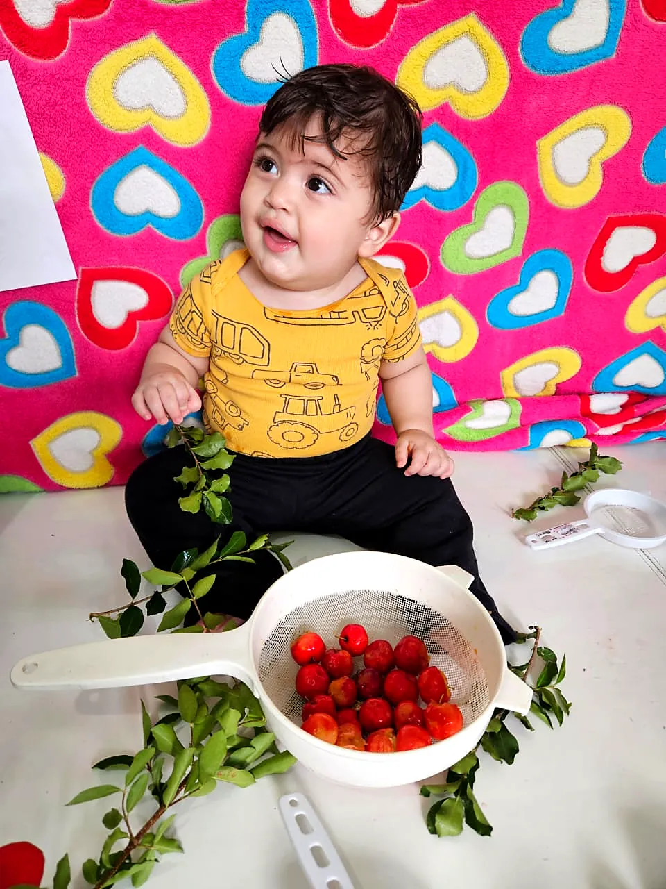

Aulas extras
Atividades dentro da escola para a criança se movimentar, se expressar e descobrir do que gosta.

Inglês
- Em parceria com o CCAA
- Escuta e fala
- Novas culturas
A educação infantil é a fase em que a criança mais desenvolve as suas potencialidades. O inglês é uma das línguas mais faladas do mundo e abre portas no futuro.
Quanto mais cedo a criança tem contato com outro idioma, mais natural fica aprender. Nas aulas, ela canta, brinca e repete palavras do dia a dia em inglês.

Futebol
- Coordenação motora
- Trabalho em equipe
- Regras e convivência
O movimento tem papel essencial na educação infantil. No futebol, a criança desenvolve habilidades motoras como caminhar, correr e saltar, e habilidades de manipulação, como chutar e arremessar a bola.
E aprende a jogar junto: esperar a vez, comemorar o gol do colega e respeitar as regras do jogo.


Judô
- Equilíbrio
- Disciplina
- Respeito ao colega
No judô, a criança conhece o próprio corpo e ganha equilíbrio, força e coordenação. Aprende a cair com segurança, a esperar a vez e a cumprimentar o colega antes e depois de cada atividade.
Ao dominar os movimentos, ganha autoestima e confiança, com valores como respeito, disciplina e companheirismo.

Musicalização
- Ritmo
- Voz e escuta
- Instrumentos
A iniciação musical na educação infantil estimula áreas do cérebro que ajudam no desenvolvimento de outras linguagens e de habilidades motoras e intelectuais.
Cantando e tocando, a criança também aprende a expressar o que sente.


Ballet
- Postura
- Musicalidade
- Criatividade
Dançar é divertido e faz bem para o corpo e para as emoções. O ballet melhora a coordenação motora e ajuda a criança a ser mais disciplinada e dedicada.
Também favorece a criatividade, a musicalidade e o trabalho em grupo.


Aula nutricional
- Com a nutricionista
- Experiências com alimentos
- Hábitos saudáveis
As aulas de nutrição são dadas pela nutricionista da escola. As crianças tocam, cheiram e provam os alimentos, acompanham as transformações que acontecem com eles e trocam ideias sobre o que faz bem.
Assim, constroem desde cedo uma relação boa com a comida.
Ver como funciona a alimentação

Quer saber dias e valores?
Cada aula tem sua turma e seu horário. Fale com a secretaria pelo WhatsApp.